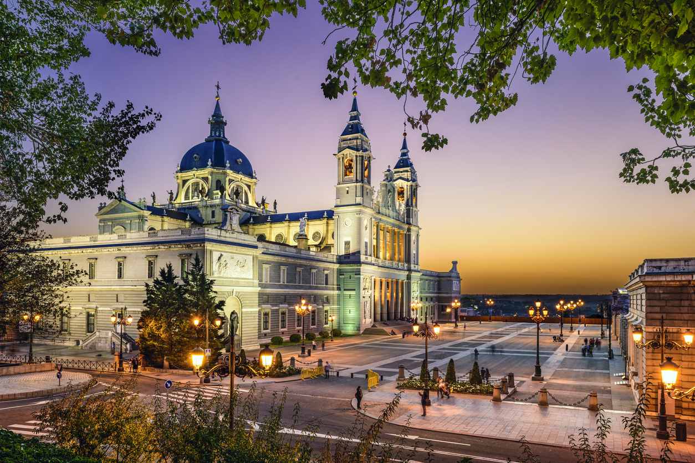
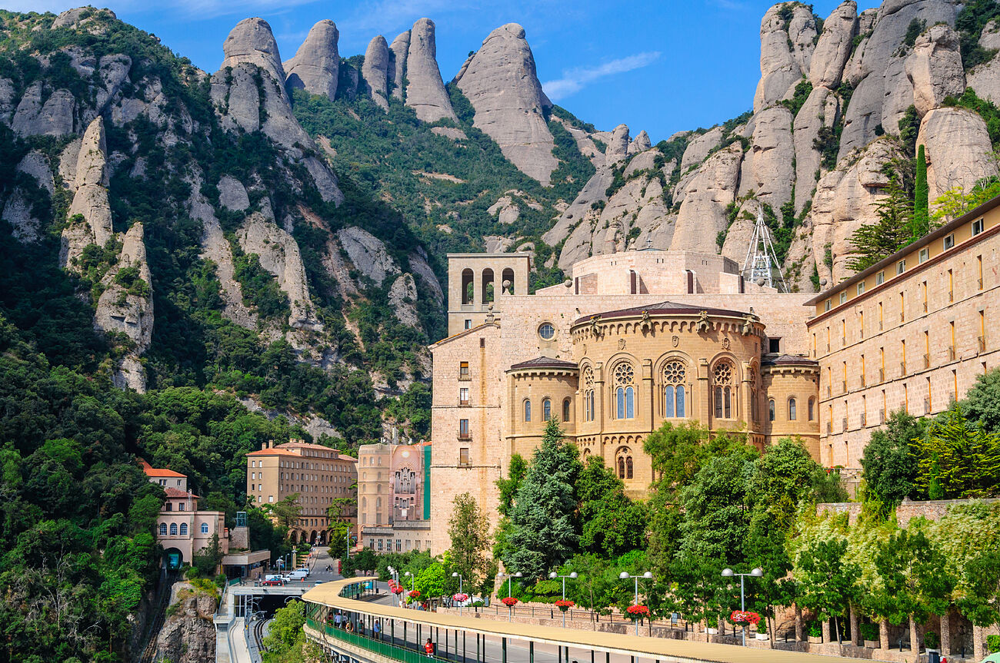
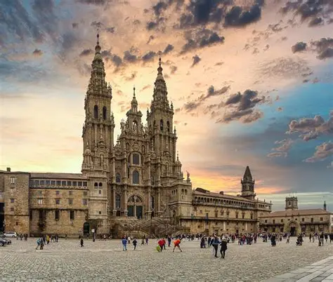

Barcelona: La Sagrada Familia

Curiosidades de Barcelona
Ciudad: Conocida por el modernismo catalán, sus playas y la Rambla. Fue sede de los Juegos Olímpicos de 1992.
Arquitecto: Gaudí. La construcción de la basílica lleva más de un siglo.
Madrid: Catedral de la Almudena
Curiosidades de Madrid
Ciudad: La capital de España, famosa por el Museo del Prado, la Puerta del Sol y ser una metrópolis vibrante.
Dato Curioso: La Almudena fue consagrada por el Papa Juan Pablo II en 1993 y tiene una mezcla única de estilos arquitectónicos.
Sevilla: Basílica de la Macarena
Curiosidades de Sevilla
Ciudad: Famosa por su arte flamenco, la Giralda y la Semana Santa.
Dato Curioso: La Macarena es una de las vírgenes más veneradas del sur de España.
Cataluña: Basílica de Montserrat
Curiosidades de Cataluña
Ciudad: Región rica en cultura, lengua propia y arquitectura modernista.
Dato Curioso: Montserrat es un santuario espiritual y natural en las montañas catalanas.
Galicia: Catedral de Santiago de Compostela
Curiosidades de Galicia
Ciudad: Tierra de leyendas, mariscos y peregrinaciones.
Dato Curioso: La catedral es el destino final del Camino de Santiago, una ruta milenaria.